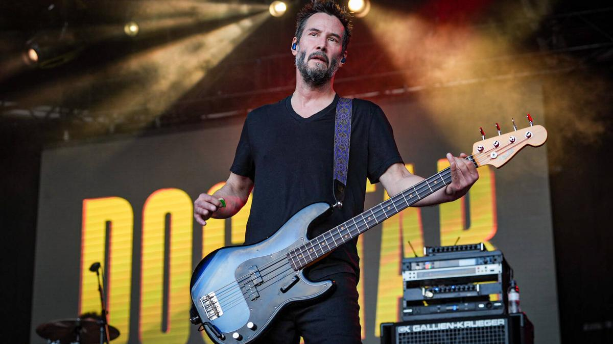

Keanu Reeves Tribute

Keanu Reeves, bassist of Dogstar, during a performance at Primavera Sound /
MANU MITRU
Keanu Reeves Timeline:
- 1964: Born on September 2 in Beirut, Lebanon.
- 1966: His family moves to Australia, then to New York and Toronto.
- 1978: Begins to show interest in ice hockey and theater during high school.
- 1984: Makes his TV debut with a small role in the series "Hangin' In".
- 1986: Appears in the movie "Youngblood", a drama about ice hockey.
- 1988: Gains attention for his role in "Permanent Record".
- 1991: Rises to fame with "Point Break" and "My Own Private Idaho".
- 1994: Stars in "Speed", an action movie that makes him a movie star.
- 1999: Stars in "The Matrix", a sci-fi movie that becomes a worldwide hit.
- 2003: Reprises his role in "The Matrix Reloaded" and "The Matrix Revolutions".
- 2005: Stars in "Constantine", based on the Hellblazer comic.
- 2008: Stars in "The Day the Earth Stood Still", a remake of the 1951 film.
- 2013: Directs and stars in "Man of Tai Chi".
- 2014: Begins the successful "John Wick" film series.
- 2017: Releases "John Wick: Chapter 2", further solidifying his fame in the action
genre.
- 2019: Releases "John Wick: Chapter 3 – Parabellum" and appears in "Toy Story 4" as
the voice of Duke Caboom.
- 2020: Announces the development of "The Matrix 4".
- 2021: "The Matrix Resurrections" is released.
- 2022: Continues working on various projects, including more "John Wick"
installments.
- 2023: Participates in the production and promotion of "John Wick: Chapter 4".
- 2024: Continues working on various film and television projects, including
independent productions and voice acting.
Visit Keanu's Wikipedia